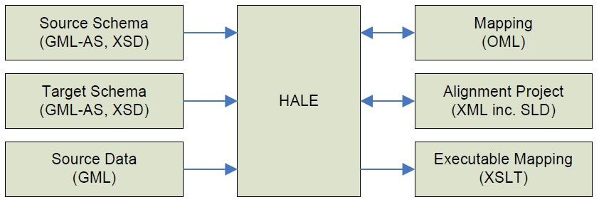

Introduction to HUMBOLDT Alignment Editor
What can HUMBOLDT Alignment Editor do for you ?
The HUMBOLDT Alignment Editor, short HALE, is a
rich graphical user interface for defining mappings
between concepts in conceptual schemas (application
schemas created with the HUMBOLDT Model
Editor or other modelling applications), as well as for
defining transformations between attributes of these
schemas.These mappings are expressed in a highlevel
language called Ontology Mapping Language
(OML) and can later be used by the Conceptual
Schema Transformer processing component to generate
an executable form of transformation, such as
an XSLT for XML input/output.

To make the mapping process more accessible to a
domain expert and to increase the quality of transformations,
HALE allows working with sample source
geodata for interactive visualization and validation.
Furthermore, a task-based system as it is often used
in programming supports users in the creation of a
mapping.
HALE also provides other innovative capabilities,
such as the real-time evaluation of the mappings you
create in terms of their quality. Finally, HALE also
contains a system that can be used to document the
validity of mappings.